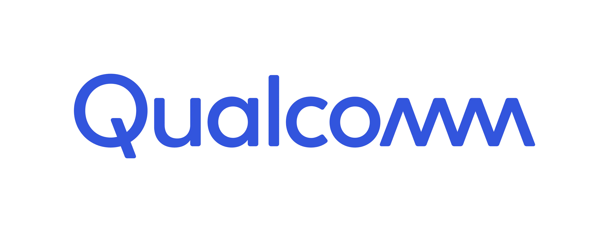

Sayan Dey
An avid newbie developer with intern experiences at Qualcomm and Continental India.
Machine Leraning Enthusiast with full-fledged project building experiences in Keras (Python).
Developer experience in PYTHON and GOLANG, offering voluntary help in debugging requested codes
at my facebook messenger account.
Also bears good competitive programming experience in C & C++.
- Domain: Computer Science & Engineering
- Status: Incoming FTE @Qualcomm
- Internships: Qualcomm, Continental
- Hackathons: Hack The
Build 2k20, Inout 2k20
- Programming Lang: Python, C & C++, Golang
- Frameworks: Keras, Flask(Intermediate)
- Platforms: VS Code, Jupyter Lab, Jupyter Notebook, Colab, Remote SSH
- Softwares: Git, Matlab, Swagger
- Databases: MongoDB, SQL, Redis
- Operating System: Linux (Ubuntu) CLI prone and Windows 10
- Interest: ML development, Data Science, Feature Development, Algorithm Optimization,
Quantumn Computing
- Put-Forward points: Innovative Problem Solving Skills, Debugging Skills, Quick
Thinker and Implementer, Good Googling Skills
- Journalist Profile: Campus Reporter and Content Writer at Monday Morning
- Activities: Badminton, Cricket, Blogger, YouTuber
- Social Work: Co-Founder and Ex-VP of animal welfare club VoV
4 May - 3 August, 2020
Interned at Qualcomm
Developed an end-to-end ML module in Python for Execution Path Anomaly Detection.
This scalable module parses logs given a standard logging format.
This contains an implementation of LSTM architecture to learn valid sequence of logs from
passlogs.
The module is scalable and used to log-sequence and parameter-value anomalies.

27 May - 17 July, 2019
Interned at Continental
Had an SDE internship experience at Kolkata base of Continental India Pvt. Ltd.
Developed a high-level mongo utility in GOLANG.
Developed a backend to connect to underlying mongo database and a swagger frontend to interact.
Worked on a live company project in GOLANG programming language.
Worked with socket programming.
Skills: MongoDB, RedisDB, Github, Go Routines, Swagger Docs, Basic Webdev etc.


Works like a smart suggestion feature as in google keyboard, suggests words on previous knowledge
of text data trained on.

A pc-to-pc chat app implemented using sockets with public-private-key encryption.


A Covid-19 Risk-Visualizer and a Relative Vaccination Urgency Estimator backed up by an enhanced
SIR model fitted with real data.
Handwritten Digit Generator GAN (El Digito)


El Digito is an AI agent, which creates random digits which look like human-handwritten digits.
El Digito works on the principle of GAN, a generative model.

Simulating and Visualizing Physics laws in Python.

A shell-script for linux-based systems that helps connect from to a bluetooth device fast with a
known device ssid.

A wrapper easy-to-use for playlist queueing over rhythmbox in linux based system. A music-player
utils. Add songs of different genre in config file and play a genre in rhythmbox very easily.

A very high-level mongo util library in golang with minimal features and a swagger frontend to
cennect to the database.

Reads incoming mails containing WhatsApp text chat attachments, analyze them and mail the
results.